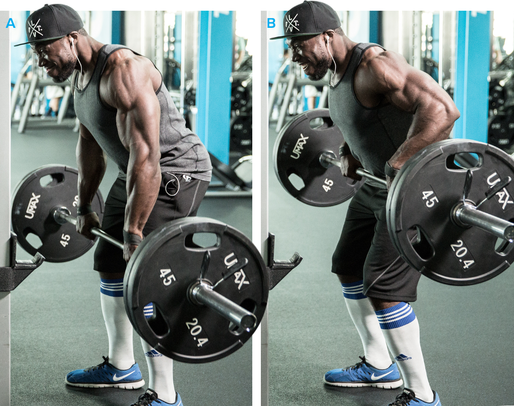
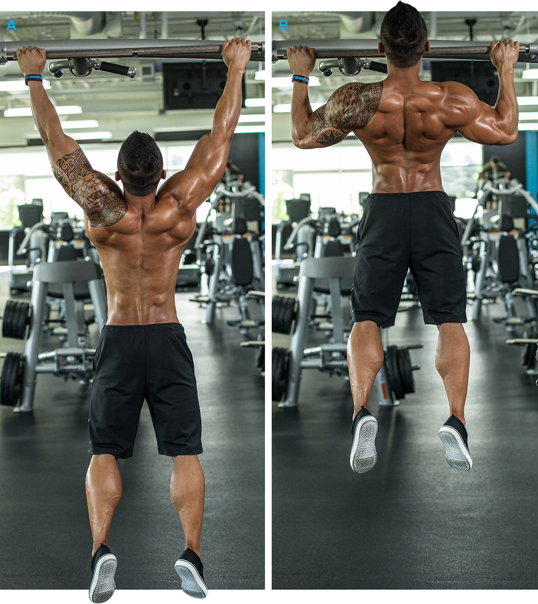
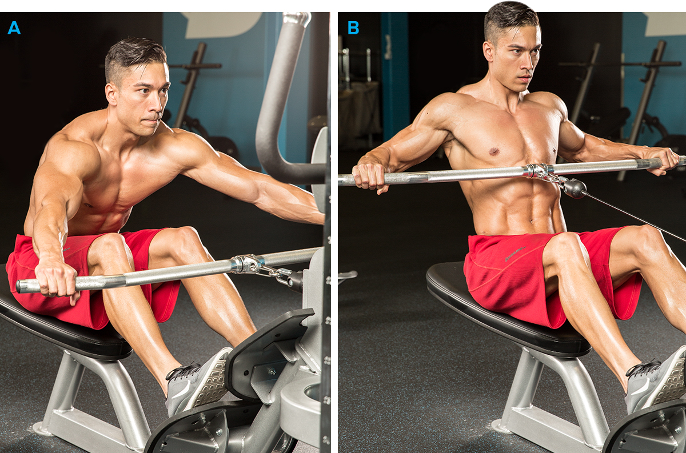
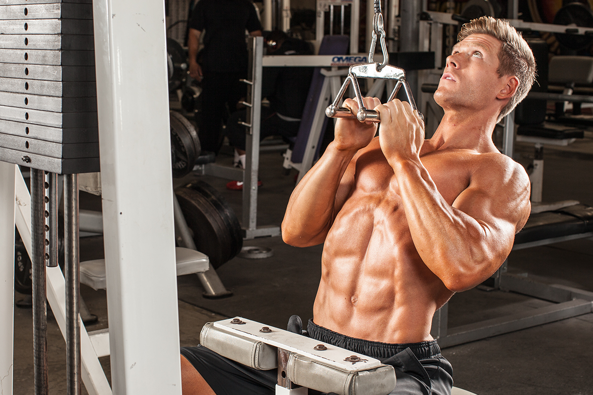
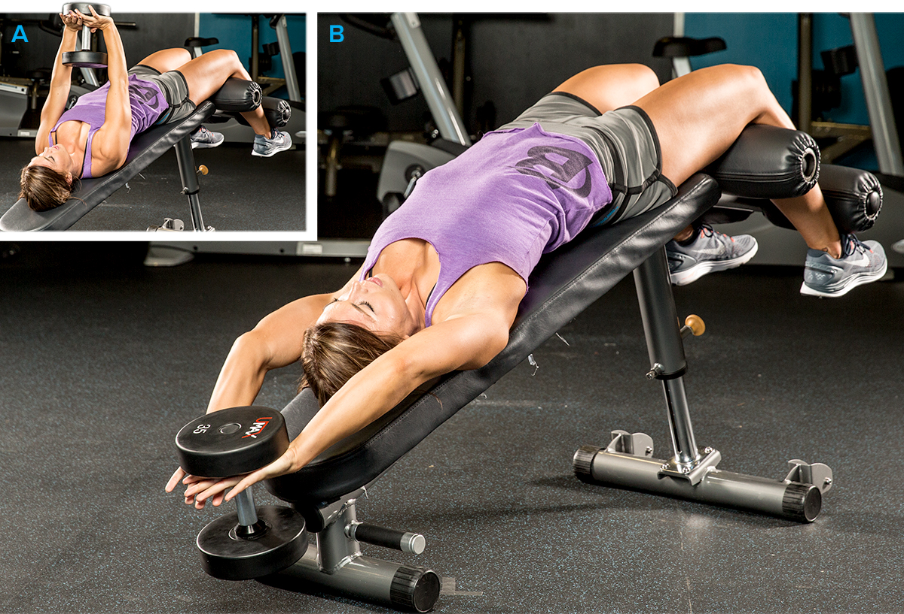

1. Bent-Over Barbell DeadliftWhy it's on the list: This is probably the second-best back movement in terms of sheer weight you can lift. EMG research has suggested that hitting bent-over barbell rows will work the larger muscle groups of the upper and lower back equally, making this a great overall back builder. Like the deadlift, this is another technical move that requires excellent form but rewards you with a ton of muscle . In your workout: Do bent-over rows toward the start of your back workout for heavy sets in lower rep ranges, about 6-8 or 8-10. The Smith version is a suitable substitute; it locks you in the vertical plane, but your body has to be in just the right position relative to the bar. The bent-over barbell row has a significantly greater lumbar load than many other back exercises, so it's best done early in your workout in order to save your lower back. |
 |
2. Wide-Grip Pull-UpWhy it's on the list: It's always a good idea to have an overhead pulling movement in your back routine, and the pull-up is one of the best. Wide-grip pull-ups are excellent for putting emphasis on the upper lats. A closer grip may allow for a longer range of motion, but it may be possible to load the wide-grip pull-up to a greater degree because of an optimized starting joint position. The biggest challenge here for most trainers is training to failure in the right rep range for growth, which is 8-12. In your workout: Because the pull-up range of motion is so long, several light reps make great warm-up moves for the shoulder joints. Since form is so important with these, it may be best to push pull-ups toward the front of your workout to ensure proper shoulder-joint positioning |
 |
3. Wide-Grip Seated Cable RowWhy it's on the list: Just about everyone defaults to the close-grip bar on rows. If that sounds like you, you'll find using a wide grip on a lat bar a nice change of pace because it shifts some of the emphasis to the upper lats. Wide rows mimic some back machines, so don't do both in your workout unless you make some other kinds of changes, like grip or target rep range. You might even try flipping your grip�and going about shoulder-width apart�which better targets the lower lats as the elbows stay tighter to your sides In your workout: Like machines, cables are best done toward the end of your workout. Choose a weight that enables you to complete no more than about 12 reps. |
 |
4. Close-Grip Pull-DownWhy it's on the list: Since we've already covered the wide-grip pull-up, the wide-grip pull-down is too similar, so we opted for the close-grip handle for our pull-down selection. EMG research suggests that use of a close neutral grip activates the lats similarly to a regular grip, so you're not missing out on any muscle fibers. As mentioned earlier with pull-ups, a closer grip does allow for a longer range of motion and increased time under tension for the lats, which is great for building muscle In your workout: This exercise can make a good warm-up move for your shoulders, but when used as a mass-building exercise, it's best placed toward the end of your workout for sets of 8-12 reps. |
 |
5. Decline Bench Dumbbell Pull-OverWhy it's on the list: Pull-overs for back? Absolutely! This one mimics the straight-arm cable pull-down you're probably familiar with. Yes, this is a single-joint move, but it allows you to really target and torch your lats. The decline version puts your lats under tension for a longer range of motion than when using a flat bench. Just make sure the dumbbell clears your head, and drop it on the floor behind you when you're done In your workout: In almost all cases, single-joint movements should be done last in your body-part routine. Keep the reps on the higher end for a nice finishing pump, around 12-15 per set. |
 |